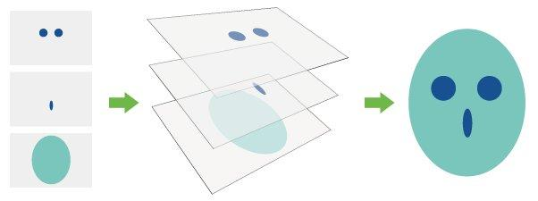

Android 控件架构
抛开平常偷懒使用的butterknife。平常使用最多的的就是setContentView 然后findViewById。里面具体发生了那些事情，在这里做一个简单的介绍。


findViewById是深度遍历的 在setContentView之后 ActivityManagerService 会回调OnResume()方法 这个时候系统才会将DecorView添加到PhoneWindow中让他显示出来，完成界面的绘制
View的测量和绘制
View的测量
测量主要在onMeasure方法中进行，主要是有一个类来测量：MeasureSpec,这是一个32位的int值，高2位是测量模式，低30位用来测量大小，内部使用的都是位运算，提高效率，但是我从来没有过位运算。
- 测量模式
- EXACTLY
这个是精确值模式，当我们将控件设置为layout_width或者layout_height属性指定为具体数值的时候使用。e：android：layout_width=100dp这个时候系统使用的就是EXACTLY模式 - AT_MOST
即最大值模式，当控件的属性layout_width为wrap_content的时候就是使用这种模式，要求控件的大小不超过父控件大小就可以 - UNSPEXIFIED
这个是不测量模式，用于自定义控件
- EXACTLY
使用
一
1
2int specMode=MeasureSpec.getMode(measureSpec)
int specSize=MeasureSpec.getSize(measureSpec)二
1
2
3
4
5
6// 如果不知道控件的大小，可以使用这个方法就可以知道控件的大小了
int w = View.MeasureSpec.makeMeasureSpec(0, View.MeasureSpec.UNSPECIFIED);
int h = View.MeasureSpec.makeMeasureSpec(0,View.MeasureSpec.UNSPECIFIED);
view.measure(w, h);
view.layout();
addView(view); //就可以将控件添加到副布局中了
View布局
就是onLayout()的过程
View绘制
绘制主要需要在onDraw()方法中进行，有一个画布，所有的绘制操作都和画布有关，后面会详细解释的，最好理解一下ps的图层，图像是一层一层叠加起来的

ViewGroup的测量
ViewGroup在测量的时候回遍历所有子View的measure方法，然后会调用layout方法进行布局，最后在绘制
红包布局实战
最近抢红包这个东西比较火，就用它来实现一次简单的ViewGroup实战
- MainActivity
1 | public class MainActivity extends AppCompatActivity { |
RedPacketLayout
1 | public class RedPacketLayout extends ViewGroup { |
RedPacketView
1 | public abstract class RedPacketView extends android.support.v7.widget.AppCompatTextView { |
BigRedPacketView
1 |
|
SmallRedPacketView
1 |
|
activity_main
1 | <?xml version="1.0" encoding="utf-8"?> |
自定义View
一些重要的回调方法
onFinishInfalte从XML加载完组件回调onSizeChanged组件大小改变时回调onMeasure回调该方法来进行测量onLayout回掉该方法确定显示位置onTouchEvent监听到触摸事件是回调
对textView的自定义
有边框的TextView
1 | · @Override |
心得
之前看第一遍的时候对canvas.save()和canvas.restore()这两个方法有一点不理解，第二遍的时候明白了很多，给大家演示一下就明白了。
先来两张图

1 | @Override |
1 | @Override |

canvas.save()和canvas.restore()的意义是在某一个时间节点保存当前画布的状态，在对画布进行操作之后还原画布的状态
闪动的TextView
主要使用Shade来渲染
1 | Paint paint; |
###复合控件
这个是通过自定义属性来自定义控件：比如android:layout_height="match_parent" 这个是Android系统给我们提供的属性，我们可以自己定义这种属性。
- 自定义属性资源
在res/value目录创建attrs.xml1
2
3
4
5
6
7
8
9
10
11
12
13
14
15
16
17
18
<?xml version="1.0" encoding="utf-8"?>
<resources>
<declare-styleable name="test">
<attr name="title" format="string" />
<attr name="titleTextSize" format="dimension" />
<attr name="titleTextColor" format="color" />
<attr name="leftTextColor" format="color" />
//不同的属性使用|隔开
<attr name="leftBackGround" format="reference|color" />
<attr name="leftText" format="string" />
<attr name="rightTextColor" format="color" />
<attr name="rightBackGround" format="reference|color" />
<attr name="rightText" format="string" />
</declare-styleable>
</resources>
1 | public class SmarterLin extends LinearLayout { |
1 | <com.smart.myapplication.SmarterLin |
###重写View来实现全新的自定义控件
就是上面闪动的textview
自定义ViewGroup
一个弹性scrollView
不是那么流畅，只是大概理解他的原理1
2
3
4
5
6
7
8
9
10
11
12
13
14
15
16
17
18
19
20
21<com.smart.myapplication.SpringScrollLayout xmlns:android="http://schemas.android.com/apk/res/android"
xmlns:tools="http://schemas.android.com/tools"
android:layout_width="match_parent"
android:layout_height="match_parent"
android:orientation="vertical"
tools:context="com.smart.myapplication.MainActivity">
<TextView
android:background="#00ffff"
android:layout_width="match_parent"
android:layout_height="match_parent" />
<TextView
android:background="#00ff00"
android:layout_width="match_parent"
android:layout_height="match_parent" />
<TextView
android:background="#ff0000"
android:layout_width="match_parent"
android:layout_height="match_parent" />
</com.smart.myapplication.SpringScrollLayout>
1 |
|
Android 事件拦截机制分析
ViewGroup主要是这三个方法1
2
3
4
5
6
7
8
9
10
11
12
13@Override
public boolean dispatchTouchEvent(MotionEvent ev) {
return super.dispatchTouchEvent(ev);
}
@Override
public boolean onInterceptTouchEvent(MotionEvent ev) {
return super.onInterceptTouchEvent(ev);
}
@Override
public boolean onTouchEvent(MotionEvent event) {
return super.onTouchEvent(event);
}
View主要是这个方法
1 | @Override |

一般不会操作dispatchTouchEvent这个方法，所以这里就不讨论这个方法 ，如果在ViewGroup中截断事件onInterceptTouchEvent 那么View是收不到事件的，如果在子View中处理了事件onTouchEvent，就是onTouchEvent返回值是true,ViewGroup是收不到事件的